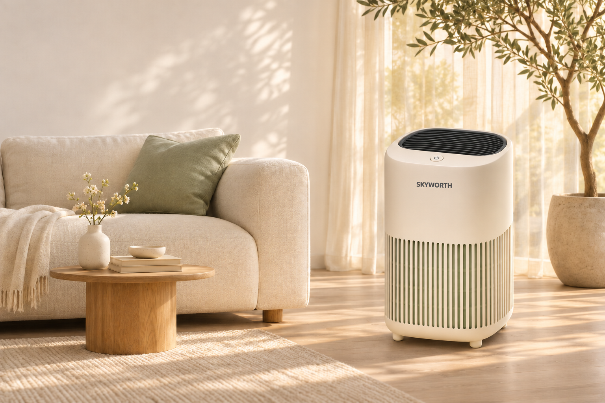
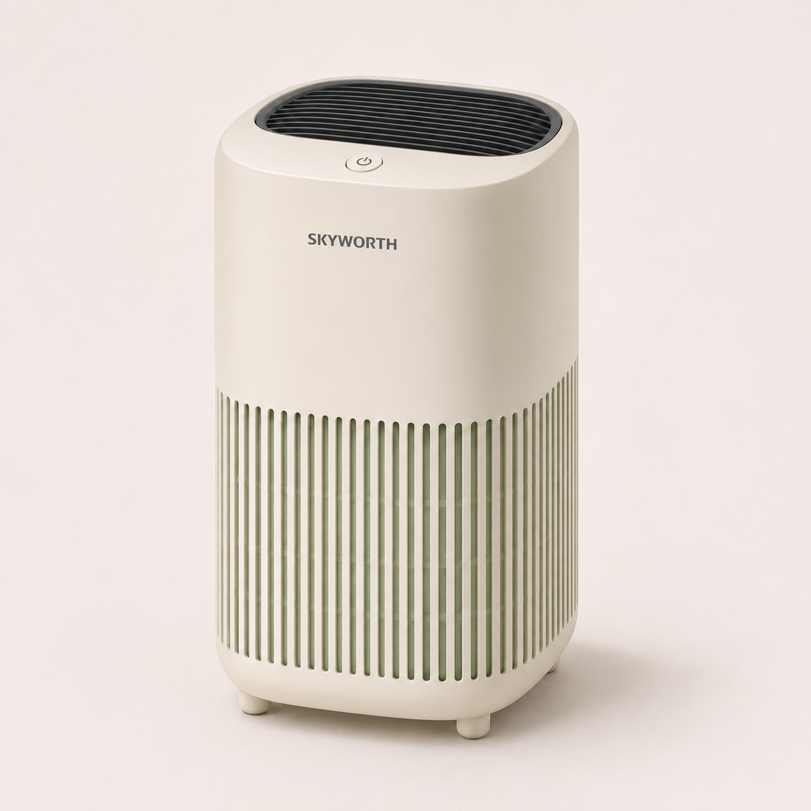

SKYWORTH HOME LIVING
A little more
room to breathe.
Bring a calmer feeling home.
Explore the concept↗
WORKFLOW DEMOAI-GENERATED · NOT FOR SALE
SKYWORTH 创维 · 家电出海素材生成
围绕创维品牌，从商品原图到家居场景，
再到多语言广告，完整呈现素材制作流程。

SCENE 01 / LIVING ROOM
围绕创维品牌出海与跨境电商广告场景，串联商品资料录入、场景延展、多语言文案、人工审核与素材导出。以一款净化器示意模型，展示同一商品在不同家居环境中的表达。
本页为项目流程复现。图中的产品外观及场景由 AI 重制，用于演示品牌素材制作方法，不是创维官方型号照片或项目原始交付素材。
外形、标识与细节，成为场景制作的共同基准。
围绕家居情境组织画面，再适配不同语言的文案。
核对产品与内容，记录版本，导出可追溯的素材。
点击场景与语言，查看素材如何变化。
亚麻、浅木与柔和日光，呈现自然舒适的居家氛围。
以商品原图为参考，保留暖白机身、SKYWORTH 标识、顶部按键与竖向通风格栅。置于浅木与亚麻家具构成的客厅，匹配柔和日光与接地阴影。
AI 场景生成仍可能改变局部细节，因此需要在最终输出前人工核对。
沿用选中的场景，让标题、辅助文案与行动提示一起切换。文案聚焦生活感受，不添加未经验证的功效或性能数字。
A little more room to breathe.
Bring a calmer feeling home.
Explore the concept
Bring a calmer feeling home.
创维品牌场景演示 · AI 重制素材 · 当前预览会随上方场景同步更新
把检查点放进流程，而不是放到发布之后。
逐项确认当前版本，即可导出广告与审核记录。
这是人工审核流程演示。勾选代表你的确认，不代表系统已自动验证商品真实性或广告合规性。
请先完成 4 项确认。切换场景、语言或比例后需重新确认。
BEHIND THE VISUALS
商品资料标准化 → 场景与脚本模板 → 多语言适配 → 审核与版本记录